About me
I’m a 3D Generalist, Web Designer and UI Designer from Sarpsborg, Norway. I have a master in applied computer science and a master in 3D computer animation. I created this site to showcase my portfolio and to demonstrate my understanding of both design and programming. I enjoy transforming complex problems into beautiful, intuitive solutions. My goal is to communicate in the most creative and effective way possible.
I believe design is storytelling. By uniting UI, graphic design, 3D, and animation, I create holistic digital experiences that capture identity, emotion, and meaning for the people and brands I collaborate with.
My job dream is working with a company that sees value in the creative process.
What i'm doing
-

3D Design
Detailed 3D visuals and motion that bring ideas, products, and concepts to life.
-

UI design
Intuitive and visually consistent interfaces that make digital experiences clear and engaging.
-

Web design
Modern, quality websites that blend creativity, usability, and performance.
-

Photography
Clean, professional visuals that highlight form, detail, and atmosphere.


 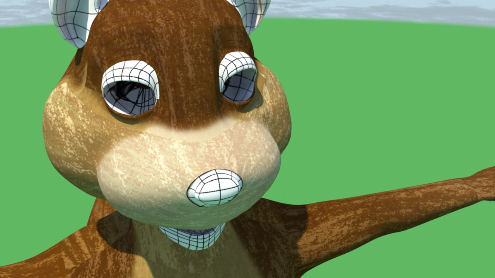
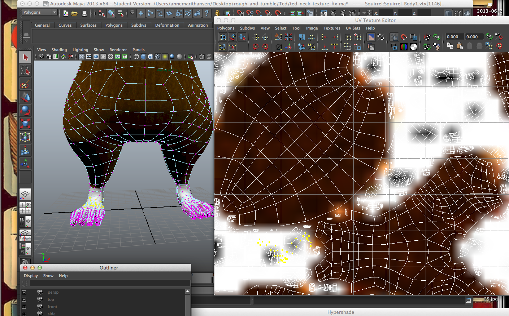
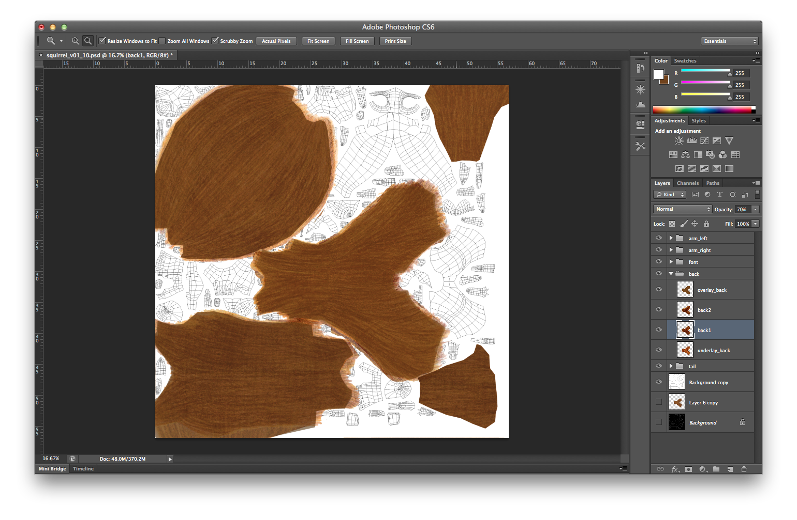
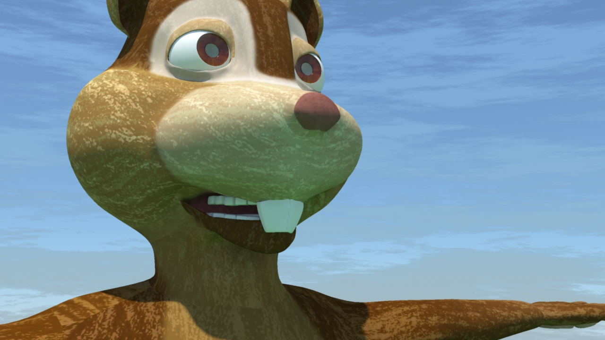
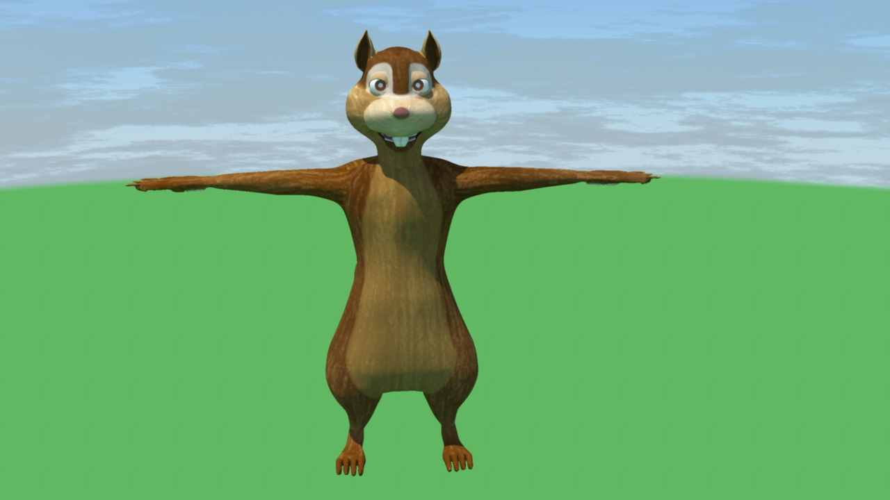
[](https://vimeo.com/123456789)
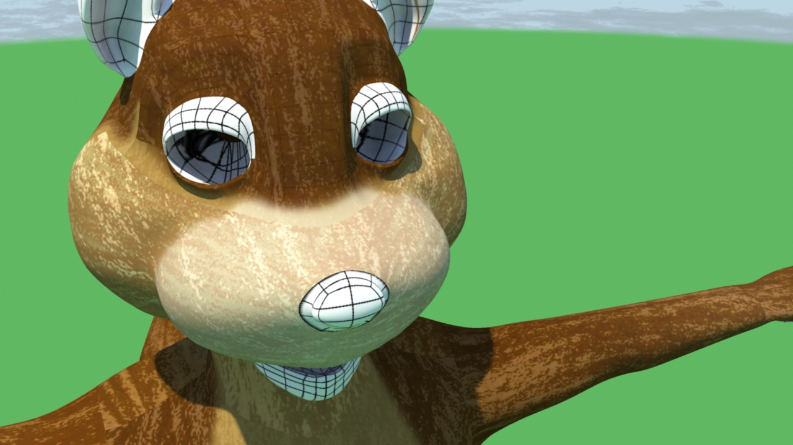
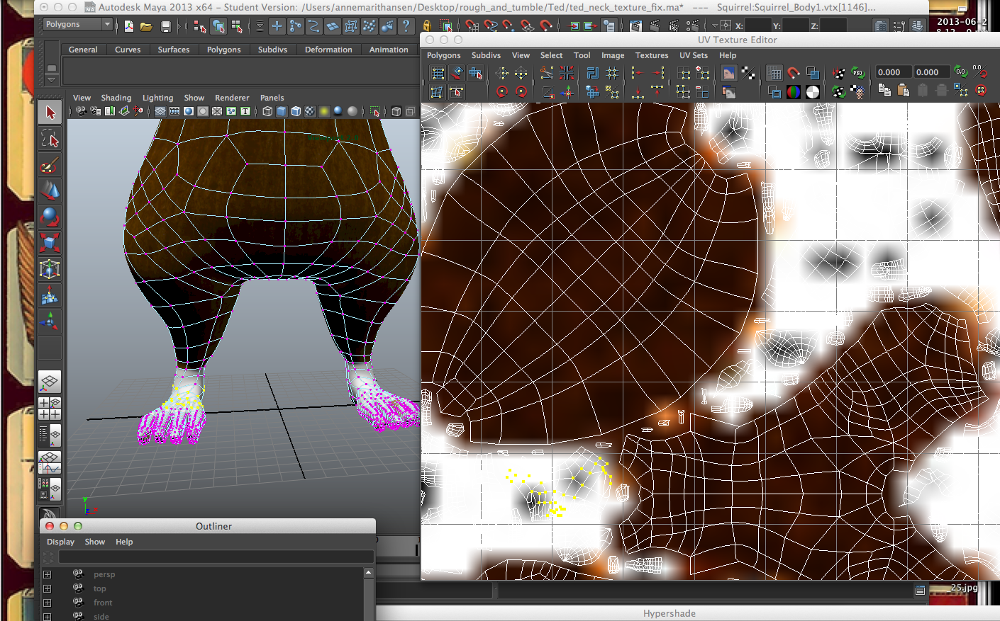
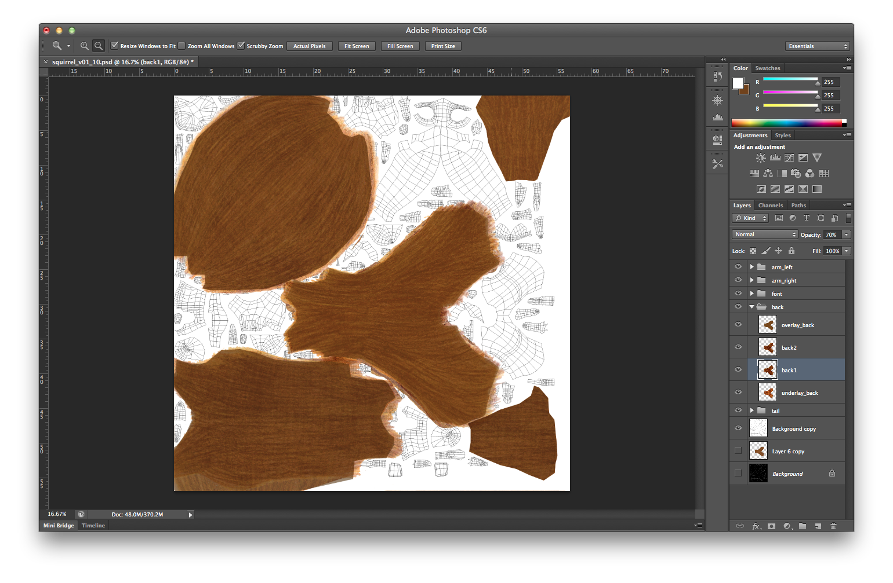
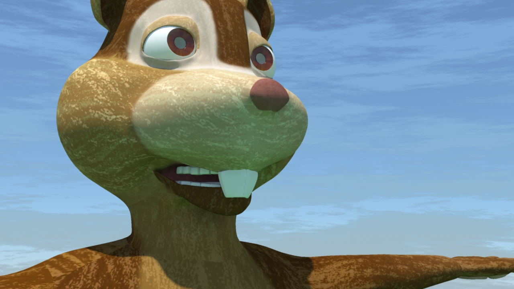
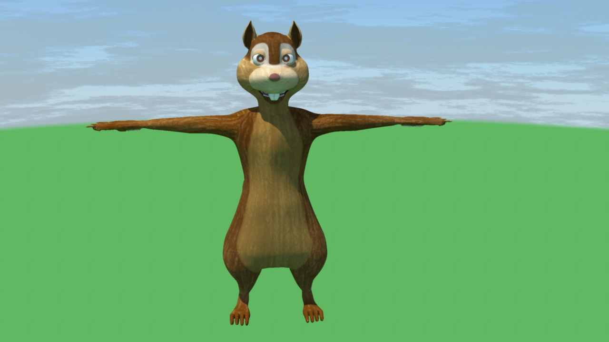
[](https://vimeo.com/123456789)


 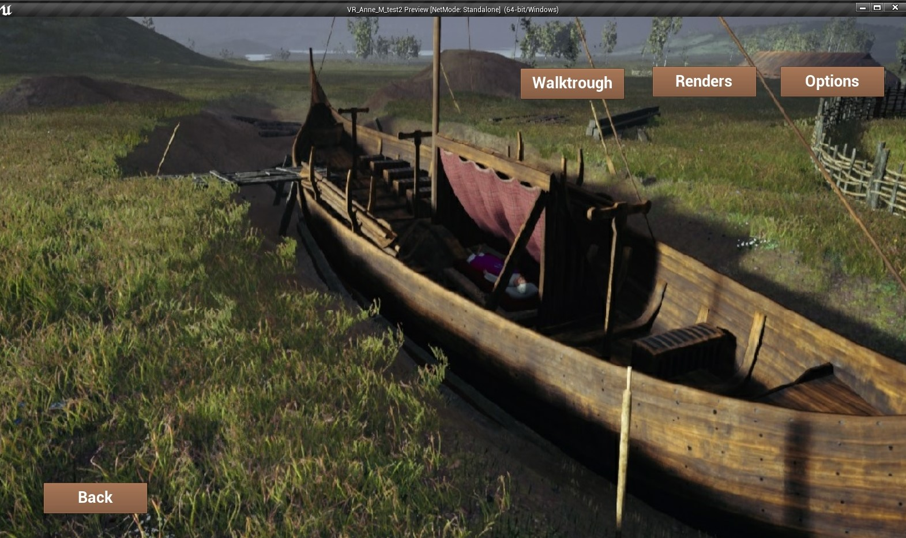
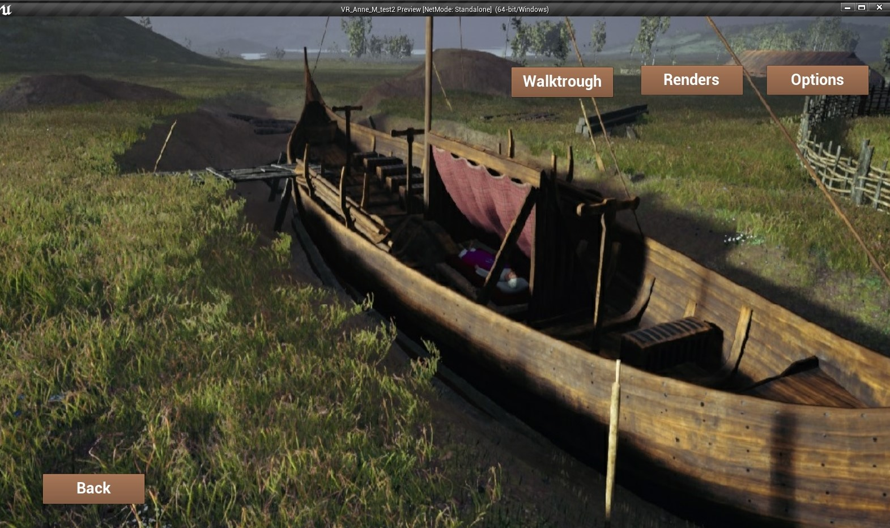